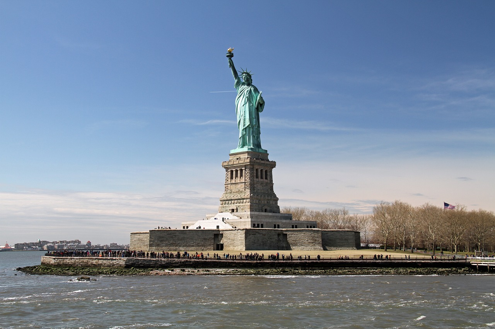
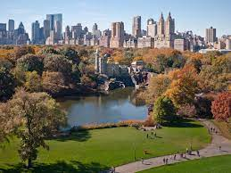

New York, située dans l'État de New York, est l'une des villes les plus dynamiques et cosmopolites au monde. Elle est réputée pour sa scène artistique et culturelle florissante, ses monuments emblématiques, ses quartiers ethniques animés et sa vie nocturne animée. La ville est un centre mondial de la finance, de la mode, de l'édition, de la recherche scientifique, des médias et des arts. New York attire des millions de visiteurs chaque année grâce à ses nombreuses attractions touristiques, notamment la Statue de la Liberté, l'Empire State Building, Central Park, le Metropolitan Museum of Art, Times Square, Broadway, le pont de Brooklyn et bien d'autres encore. Les visiteurs peuvent également profiter de la délicieuse cuisine de la ville, allant de la street food aux restaurants étoilés au Michelin. New York est une ville qui ne dort jamais et qui offre quelque chose pour tous les goûts et tous les budgets. Que vous soyez intéressé par l'histoire, l'art, la musique, la mode, la gastronomie ou simplement par l'exploration d'une ville animée et diversifiée, New York vaut vraiment la peine d'être visitée.
Lieux populaires à visiter à New-York
- Times Square: le carrefour le plus animé de New York, avec ses écrans géants, ses théâtres de Broadway et ses foules de touristes. C'est un endroit idéal pour faire du shopping, manger et s'imprégner de l'énergie de la ville.
- La Statue de la Liberté et Ellis Island: deux monuments historiques situés sur des îles dans la baie de New York. La Statue de la Liberté est un symbole de la liberté et de l'opportunité, tandis qu'Ellis Island était le point d'entrée pour des millions d'immigrants aux États-Unis.
- Central Park:un parc emblématique situé au cœur de Manhattan, offrant une oasis de verdure au milieu de la ville animée. Vous pouvez y faire du vélo, du patin à roues alignées, du pique-nique, ou simplement vous promener et profiter de la beauté du parc.
- Le Metropolitan Museum of Art :l'un des plus grands musées d'art au monde, abritant une collection diversifiée de plus de deux millions d'œuvres d'art. Vous pouvez y admirer des œuvres de grands artistes tels que Picasso, Monet et Van Gogh.
- Le pont de Brooklyn : un pont suspendu emblématique reliant Manhattan et Brooklyn, offrant une vue imprenable sur la ligne d'horizon de New York. Vous pouvez marcher ou faire du vélo sur le pont pour une expérience unique de la ville.


